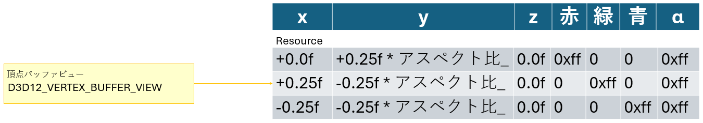

■はじめに
今回はポリゴンを描画します。
ソースコードは、GitHubに上げています。
■今回の流れ
今回はシェーダーを導入してポリゴンを描画します。 ポリゴンの描画に重要な要素としては頂点データがあります。 頂点データを扱うのに頂点バッファー、頂点レイアウトやパイプラインステートオブジェクトが重要になってきます。
流れとしては、以下のようになります。
太枠の場所が、今回追加される内容です。
これらを少しずつ見ていきたいと思います。
今回の説明は、流れの順番ではなく、依存関係の逆順で見ていくので、どこで実装したら良いか悩んた際は、こちらの図に戻ってください。
■ コマンドリストの記録
ポリゴンの描画
先ずは、いきなり描画する部分から見ていきましょう。
ポリゴンの描画は、コマンドリストに記録されます。
ポリゴンを描画する際は、プリミティブの種類と、頂点バッファー（のビュー）を指定した後に、
頂点数を引数としてDrawInstanced関数を呼び出します。
今回は、三角形ポリゴンを描画するので、頂点数は3になります。
[Appliaction.cpp]
プリミティブの種類には、点や線、ポリゴンのリストや繋がったストリップなどがあります。 今回は、ポリゴンのリストを使って描画します。
[From Learn Microsoft, プリミティブ トポロジ.]

■ 頂点バッファービューの作成
描画する際に実際に設定するデータは頂点バッファービューです。
この後説明して行きますが、頂点のデータは「リソース」としてそのGPUが読めるメモリに置かれます。
そのメモリはビデオメモリであることが多く、CPUからは直接アクセスできません。
そのため、頂点バッファービューを使ってGPUに読み込ませる頂点データをCPU側が掌握できる形で指定します。
[Appliaction.cpp]

頂点バッファービューは、今回は、D3D12_VERTEX_BUFFER_VIEWという構造体の形で保持します。 なお、頂点バッファーは、スマートポインターで管理していくリソースのバッファーとして扱っていきます。
[Appliaction.h]
頂点バッファービューは、頂点バッファーのデータの先頭アドレスと、1つの頂点のデータのサイズ、全体の頂点のデータのサイズを設定します。
[Appliaction.cpp]
頂点バッファービューに指定した値はまだまだ説明していないものばかりです。 次に、頂点バッファービューの設定に必要な情報を説明します。
頂点データの構造体
アプリケーション側で頂点データを扱う際は、頂点データの構造体を作成し、その配列として扱う方法が一般的です。 この構造体は、頂点の座標や法線、テクスチャ座標などの情報を持ちます。 今回は、頂点の座標と色を持つ構造体を作成します。
[Appliaction.h]
「DirectX::XMFLOAT3」は初登場です。 この構造体は、DirectXMathライブラリに含まれている構造体で、3次元の浮動小数点数を持ちます。 DirectXMathライブラリはヘッダーを読み込めば使えるようになります。
[framework.h]
色情報は、RGBAの4つの要素を持つ8バイトのunsigned char型が並んだものとしてuint32_tを使用してみました。
具体的な頂点のデータの値は、次のようになります。
三角形で、最初の行が中央の上、次が右下、最後が左下の頂点です。
この頂点型の配列のサイズが、頂点バッファビューに与えている頂点バッファサイズになります。
[Appliaction.cpp]
x座標は右から左に-1から+1, y座標は下から上に-1から+1, z座標は0です。
色は、赤、緑、青、透明度をそれぞれ下の2バイトから、0から255の値を16進数で指定しています。
アスペクト比
頂点データのy座標の値に「アスペクト比_」という値が掛けられていました。
アスペクト比は画面の縦横比の事で、DirectXでは、横幅/縦幅が使われます。
これは、実際に表示するバックバッファーのサイズが横長なのに、座標系として指定する値が正方形なので、横幅を仮想的に縮めるために縦の長さを横幅から見た縦幅の比率で割っています。
変数自体は、アプリケーションのメンバー変数として保持しています。
[Appliaction.h]
アスペクト比の初期化は、幅や高さが与えられた際に行います。 現在はコンストラクターで行っています。
[Appliaction.cpp]
■ 頂点バッファーの作成
後、設定していないのは頂点バッファーです。
頂点バッファーは、GPUが読み込むためのメモリです。
先ほども出てきましたが、リソース（のインターフェイス）「ID3D12Resource」として管理します。
[Appliaction.h]
この関数は引数が多いですが、「CD3DX12_RESOURCE_DESC(D3D12_RESOURCE_DESCのd3dx12版)」がリソースのサイズやフォーマットを指定して、 CD3DX12_HEAP_PROPERTIES(D3D12_HEAP_PROPERTIESのd3dx12版)」が、リソースに対してどのような読み書きをするのかを指定します。 今回のD3D12_HEAP_TYPE_UPLOADは、CPUからGPUにデータを転送するリソースであることを表しています。 この指定はパフォーマンスに大きな影響を与えます、今回は簡単のために、そしてデータサイズが小さいのであまり影響を及ぼさないので、この設定にしています。
[Appliaction.cpp]
バッファーを作成しても、その中身は空っぽです。 先ほど宣言した、頂点列をバッファーにコピーしていきます。
ID3D12Resource::Map関数を使うと、バッファーのメモリに対応したメインメモリの領域を作成します。 この領域に対して、memcpy関数を使って、頂点データをコピーします。 Unmap関数で、マップしたメモリを解放すると、GPUのバッファーのメモリにデータが転送されていきます。
[Appliaction.cpp]
■ 入力レイアウトの定義
さて、以上で描画命令に必要なデータは揃ったように思えますが、実際にはGPUに送っていないデータがあります。 それは、頂点データの構造体の定義です。 GPUは、頂点データの構造体の定義を知らないので、この構造体の定義をGPUに教えてあげる必要があります。 この構造体の定義を入力レイアウトと言います。
入力レイアウトは、D3D12_INPUT_ELEMENT_DESC構造体の配列として定義します。
この構造体は、頂点データの構造体のメンバー名、メンバーのデータ型、オフセットを指定します。
入力レイアウトはD3D12_GRAPHICS_PIPELINE_STATE_DESC構造体に与えられ、パイプラインステートの作成時に使われます。
パイプラインステートは前回も出てきましたが、その際はnullptrのままコマンドリストのリセット時に使いました。
今回は、きちんと設定をしていきます。
今回の入力レイアウトのデータは、次のようになります。
それぞれの行が、位置座標と色情報に対応します。
大事なのは、名前とフォーマットです。
名前は「HLSLセマンティック」に対応しています。基本的に名前は決まっているので、独自で定義することはできません。
フォーマットは、「DXGI_FORMAT」で指定します。これは、データの型を指定します。
非常に多くのフォーマットがありますが、サンプルなどを見て、必要な情報を選んでいきましょう。
今回は、3次元の浮動小数点数の座標と、8ビットのRGBAの色情報を使っているので、それに対応するフォーマットを指定します。
[Appliaction.cpp]
■ パイプラインステートオブジェクトの作成
入力レイアウトはパイプラインステートのオブジェクトを作成するのに使われます。
D3D12_GRAPHICS_PIPELINE_STATE_DESC構造体に、パイプラインの設定を指定しますが、多くの項目があります。
今回は、入力レイアウトの他に、ルートシグネチャ、シェーダーが重要な項目になります。
それ以外の項目は、2D描画でありがちな設定となります。
ここでもD3D12_PRIMITIVE_TOPOLOGY_TYPEを使って、プリミティブの種類を指定しますが、こちらの値は、細かなフォーマットの指定はなく、
点、線、三角形、多角形（パッチ）ぐらいの種別になります。
[Appliaction.cpp]
この後、D3D12_GRAPHICS_PIPELINE_STATE_DESC構造体に与えているメンバーで説明していない項目の説明に入りましょう。
■ シェーダー
描画を行うためのGPUで動くプログラムが（プログラマブル）シェーダーです。 シェーダーはHLSL(High Level Shading Language)という専用の言語で描画され、コンパイルされたバイナリがGPUに送られて実行されます。 シェーダーは、いろいろな種類があるのですが、今回は頂点シェーダーとピクセルシェーダーの2種類を使います。
シェーダーファイル
HLSLは、C言語に似た文法を持ち、GPUの特性に合わせて拡張されています。 HLSLは、.hlslという拡張子で保存されることが多いです。 今回は、shaders.hlslというファイル名で、頂点シェーダーとピクセルシェーダーをまとめて記録します。
ファイルを追加する方法は色々ありますが、例えば、「リソースファイル」を右クリックして「追加」を選択し、「新しい項目」を選択します。
ファイル名の入力になるので、shaders.hlslと入力して、「追加」を選択します。
すると、ファイルが追加されます。
ファイルは、プロジェクトの「作業ディレクトリ」（デフォルトでは「$(ProjectDir)」(プロジェクトファイルが置かれた場所)）に追加してください。
そのまま追加すると、プロジェクトファイルがある場所に追加されると思いますが、読み込むデータが増えてきて、別の場所を作業ディレクトリとする場合には、シェーダファイルを移動するのも忘れないようにしましょう。
もしかしたら、テンプレートを選択する詳細な画面が出るかもしれません。 その場合は「HLSL」の「頂点シェーダー ファイル」を選択して、ファイル名を入力して作成してください。
実際には、追加しただけでは今回の場合には都合が悪くて、ビルド時にHLSLファイルもビルドしようとしてしまいます。 今回は、実行時にコンパイルするようにしたいので、ビルドしないようにプロパティを変更する必要があります （一般的な製品では、あらかじめビルドしておいた方が実行時のコンパイル時間が省略できるので、ユーザーが素早く遊べて喜ばれます）。
ファイルを右クリックして、「プロパティ」を選択します。
「構成プロパティ」の「全般」の「ビルドから除外」を「はい」に設定します （「全ての構成」、「全てのプラットフォーム」で設定されているか確認してください）。
頂点シェーダー
頂点シェーダーは、頂点データを受け取って、その座標を変換するプログラムです。
頂点シェーダの関数には、頂点のデータが一つずつ入ってきて、その結果を一つずつ出力します。
今回は、頂点データをそのまま出力するだけのシェーダーを作成します。
残念ながら、今回はUnicodeに対応していないので、変数名などは英語です。
シェーダーは、頂点データを受け取るために、入力レイアウトで指定した構造体を使います。 頂点シェーダの引数に対して、セマンティックと呼ばれる頂点レイアウトでの名前を付けてデータを読み込みます。
頂点シェーダの出力は独自の構造体を定義します。今回は、「Vs2Ps」という名前の構造体を定義しました。 この構造体は、頂点シェーダからピクセルシェーダにデータを渡すための構造体です。 頂点シェーダの出力の構造体のメンバーにも、セマンティックを付けなければなりません。 必須なのは、「SV_POSITION」で、これは正規化された(範囲が-1から1になっている)スクリーンでの座標を表します。 あと、今回は、頂点毎に色を指定して変えているので、色をピクセルシェーダーに渡す変数colorも用意しています。
[shaders.hlsl]
ピクセルシェーダー
ピクセルシェーダーは、頂点シェーダーから渡されたデータを受け取って、ピクセルの色を決定するプログラムです。 ピクセルシェーダーの関数には、画素ごとのデータが一つずつ入ってきて、その結果を一つずつ出力します。 今回は、頂点シェーダで設定した色をそのまま出力します。 そのまま出力すると言っても、頂点シェーダーの出力は、ラスタライザーを通して補間されているので、 画素ごとの色は補間されてグラデーションとなって出力されます。
[shaders.hlsl]
シェーダーのコンパイルと読み込み
シェーダーのファイルをコンパイルするには、D3DCompileFromFileという関数を使います。 この関数を使うには、「D3Dcompiler.h」というヘッダーをインクルードし、 ライブラリ「D3DCompiler.lib」をリンクする必要があります。
[framework.h]
D3DCompileFromFileの呼び出しには、ファイル名の指定と共に、エントリーポイント（開始関数名）と、シェーダーモデル（バージョン）を指定します。 シェーダーモデルは、DirectX 12では、5.1が使われることが多いようです。 なるべく低くして置いた方が、古いPCでも動作する可能性が高くなりますが、大きい方が最新の機能が使えます。
デバッグ時には、エラーメッセージを表示できるように、コンパイル時のフラグに「D3DCOMPILE_DEBUG」を指定しています（エラーを拾っていないので、実際には表示されませんが…）。 これを指定すると、コンパイル時にエラーがあった場合に、エラーメッセージが表示されます。 また、「D3DCOMPILE_SKIP_OPTIMIZATION」を指定して、最適化をスキップしています。 最適化をスキップすると、デバッグ時に変数の値を追跡しやすくなります。
[Application.cpp]

実際にエラーが起きたら、D3DCompileFromFileの最後の引数にその情報が蓄積されるので、 そこからエラーメッセージを取り出して表示できます。
[Application.cpp]
ここで得られたシェーダーのオブジェクトは、先ほども紹介した下記のパイプラインステートを作成する際の「VS」や「PS」メンバーに指定します。
[Appliaction.cpp]
■ ルート署名の作成
ルート署名は、パイプラインステートの作成時に必要な情報です。 ルート署名は、シェーダーに渡すデータのレイアウトを指定します。 今回は、特に中身がない空のルート署名を作成します。今後、テクスチャや座標変換が出てくると重要になってきます。
ルート署名は、今回は、シンプルなのですが非常に複雑な状況に対応できるように設計されています。 そのため、いろいろなデータをD3D12SerializeRootSignatureでシリアル化（1つにまとめ）て、 まとめられたものを使って、CreateRootSignatureによりルート署名を作成します。 先ずは、「CreateRootSignatureで必要な情報が生成される」位を覚えておけばよいでしょう。
これも上にあるD3D12_GRAPHICS_PIPELINE_STATE_DESCのpRootSignatureに指定してパイプラインステートの生成情報に使います。
[Application.cpp]
■ 描画に必要な状態を設定
これで、描画に必要なデータは揃いました。 あとは、描画に必要な状態を設定します。 状態を設定する処理は、次のようになります。
コマンドリストを使って、必要な情報を専用の関数を使って設定していきます。 まずは、ビューポートとシザー矩形、ルート署名を設定します。
[Application.cpp]
今回は、コマンドリストのリセット直後にこれら状態を設定しました。
ビューポート
ビューポートは、描画する範囲を指定します。 ビューポートは、左上の座標と、幅と高さ、最前と最奥の深度を指定します。 基本的には、全画面を設定します。
[d3d12.h]
今回は、d3dx12版のCD3DX12_VIEWPORT構造体をメンバー変数に追加して、ビューポートを設定しています。 CD3DX12_VIEWPORTは、D3D12_VIEWPORTの派生で、コンストラクターで初期化でき、使いやすくなっています。
[Application.h]
初期化はアプリケーションのコンストラクターで行います。
[Application.cpp]
はさみ矩形
はさみ矩形は描画領域を指定します。はさみで区切られた内側だけが描画されます。 こちらも基本的には、全画面を設定します。 はみ出さないように特定の領域に書きたい時に使います。 が、結構、忘れる存在です…
はさみ矩形の構造体自体は、RECT(範囲)の型で指定されます。
[windef.h]
今回は初期化等が定義されているd3dx12版のCD3DX12_RECT構造体をメンバー変数の型に使っています。
[Application.h]
初期化は同じくアプリケーションのコンストラクタ―で行います。。
[Application.cpp]
■ さいごに
さて、ポリゴンが表示されました。 画像を貼ったり3D描画をしたいところです。